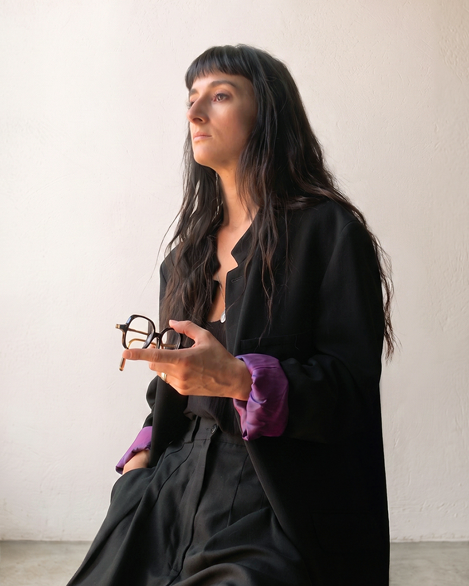

Spécialisée dans le streetwear, l'esthétique alternative et l'univers vintage, je crée des visuels hybrides, magnétiques et sur-mesure. Mon processus créatif a quelque chose de magique, mais je ne laisse absolument rien au hasard. Je pars d'un croquis brut puis lui donne vie via peinture digitale, la puissance brute de l'IA, ou un mélange des deux. J'édite chaque détail pour obtenir exactement l'ambiance que vous visez.
J'associe cette force de frappe créative à une discipline technique stricte. Mon véritable atout est que j'ai fait mes armes dans le monde exigeant de la production physique. Après des années à concevoir et préparer des fichiers pour l'impression textile (flocage multicouche, sérigraphie) et la production d'objets (livres, magazines, packaging, signalétique), je sais comment construire et préparer un fichier pour l'envoi en print.
En clair : je ne me contente pas de vous livrer une "belle image". Je livre des visuels percutants, une typographie parfaitement équilibrée, et des fichiers techniquement blindés (Print & Web). Je sécurise toute votre chaîne de production graphique pour que vous n'ayez jamais de mauvaise surprise chez l'imprimeur.

Cette volonté de proposer une prestation créative de A à Z est exactement ce qui a motivé mon passage en freelance. Pour que la magie opère rapidement, j'aime que les choses soient claires dès le départ. Vous m'approchez avec un besoin défini (affiche, logo, produit), une direction globale (illustration, photoréalisme, typographie forte, vidéo IA), votre cible, et quelques inspirations ou juste un "mood". Vous me confiez la matière brute, je traduis votre vision, et je délivre.
Que vous ayez besoin d'une illustration vibrante, d'une couverture de livre percutante, de visuels merch audacieux ou d'une modélisation de design produit, je réponds présente. Basée à Toulouse, je collabore à 100 % en distanciel avec des agences, des marques et des créateurs indépendants.